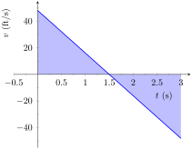

Example 1.2.3. Finding position using velocity.
The velocity of an object moving straight up/down under the acceleration of gravity is given as \(v(t) = -32t+48\text{,}\) where time \(t\) is given in seconds and velocity is in ft⁄s. When \(t=0\text{,}\) the object had a height of 0 ft.
-
What was the initial velocity of the object?
-
What was the maximum height of the object?
-
What was the height of the object at time \(t=2\text{?}\)
Solution.
It is straightforward to find the initial velocity; at time \(t=0\text{,}\)
\begin{align*}
v(0) \amp =-32\cdot 0+48\\
\amp = 48
\end{align*}
The initial velocity was 48 ft⁄s.
To answer questions about the height of the object, we need to find the object’s position function \(s(t)\text{.}\) This is an initial value problem, which we studied in the previous section. We are told the initial height is \(0\text{,}\) i.e., \(s(0) = 0\text{.}\) We know \(s'(t) = v(t) = -32t+48\text{.}\) To find \(s\text{,}\) we find the indefinite integral of \(v(t)\text{:}\)
\begin{align*}
s(t) \amp =\int v(t)\, dt\\
\amp = \int (-32t+48)\, dt\\
\amp = -16t^2+48t+C\text{.}
\end{align*}
Since \(s(0) = 0\text{,}\) we conclude that \(C=0\) and \(s(t) = -16t^2+48t\text{.}\)
To find the maximum height of the object, we need to find the maximum of \(s\text{.}\) Recalling our work finding extreme values, we find the critical points of \(s\) by setting its derivative (the velocity function) equal to \(0\) and solving for \(t\text{:}\)
\begin{align*}
0 \amp = -32t+48\\
t \amp =48/32\\
\amp = 1.5\text{ s }\text{.}
\end{align*}
(Notice how we ended up just finding when the velocity was 0ft/s!) The first derivative test shows this is a maximum, so the maximum height of the object is found at
\begin{equation*}
s(1.5) = -16(1.5)^2+48(1.5)=36\text{ ft }\text{.}
\end{equation*}
The height at time \(t=2\) is now straightforward to compute:
\begin{align*}
s(2) \amp =-16(2)^2+48(2)\\
\amp = 32\text{.}
\end{align*}
The height is 32 ft after \(2\) seconds.
While we have answered all three questions (using derivatives and antiderivatives), let’s look at them again graphically, using the concepts of area that we explored earlier.
Figure 1.2.4 shows a graph of \(v(t)\) on axes from \(t=0\) to \(t=3\text{.}\) It is again straightforward to find \(v(0)\text{.}\) How can we use the graph to find the maximum height of the object?

The \(y\) axis is drawn from \(-40\) to \(40\) and the \(x\) axis is drawn from \(0\) to \(3\text{.}\) The line starts from point \((0, 48)\) and crosses the \(x\) axis at \(x=1.5\text{,}\) the area under the curve forms a right angled triangle in the first quadrant with the positive \(x\) and \(y\) axes. After crossing the \(x\) axis at \(x=1.5\) the line goes down to point \((3,-48)\text{.}\) Another right angle is formed on the \(x\) axis but in the fourth quadrant with the \(x\) axis and line \(x=3\text{.}\)
Recall how in our previous work that the displacement of the object (in this case, its height) was found as the area under the velocity curve, as shaded in the figure. Moreover, the area between the curve and the \(t\)-axis that is below the \(t\)-axis counted as “negative” area. That is, it represents the object coming back toward its starting position. So to find the maximum distance from the starting point — the maximum height — we find the area under the velocity line that is above the \(t\)-axis, i.e., from \(t=0\) to \(t=1.5\text{.}\) This region is a triangle; its area is
\begin{align*}
\text{ Area } \amp = \frac12\text{ Base } \times \text{ Height }\\
\amp =\frac12\times 1.5\text{ s } \times 48\text{ ft/s }\\
\amp = 36\text{ ft }
\end{align*}
which matches our previous calculation of the maximum height.
Finally, to find the height of the object at time \(t=2\) we calculate the total “signed area” (where some area is negative) under the velocity function from \(t=0\) to \(t=2\text{.}\) This signed area is equal to \(s(2)\text{,}\) the displacement (i.e., signed distance) from the starting position at \(t=0\) to the position at time \(t=2\text{.}\) That is,
Displacement = Area above the \(t\)-axis \(-\) Area below \(t\)-axis.
The regions are triangles, and we find
\begin{align*}
\text{ Displacement } \amp = \frac12(1.5\text{s} )(48\text{ ft/s } ) - \frac12(0.5\text{s} )(16\text{ ft/s } )\\
\amp = 32\text{ ft }\text{.}
\end{align*}
This also matches our previous calculation of the height at \(t=2\text{.}\)
Notice how we answered each question in this example in two ways. Our first method was to manipulate equations using our understanding of antiderivatives and derivatives. Our second method was geometric: we answered questions looking at a graph and finding the areas of certain regions of this graph.